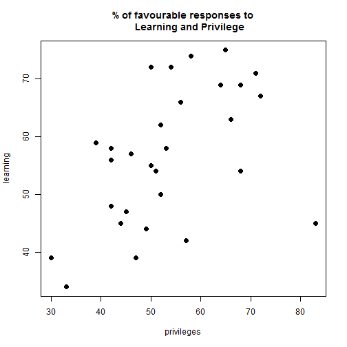
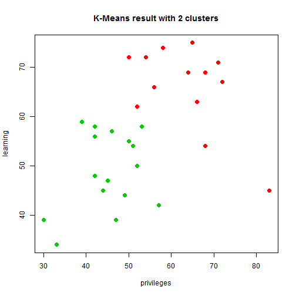

Data Analysis Opening
A case-based approach
马明
Big Data Platform Architect and Data Scientist.
Data Related Terms
What a good data analysis come from?
A good data analysis come from a good question.
Data Analysis Basic Introduction
- Classical Method
- Exploratory Data Analysis
- Bayesian Analysis
有趣的事：Paul,the psychic octopus
- 章鱼保罗，曾经连续预测正确世界杯足球比赛结果8次。
- 你认为章鱼保罗具有某种神奇的预测能力吗？
Case 1 : What's the problem?

- 1936年美国总统大选，著名期刊Literary Digest采访其100万读者，得到有43%的人选择罗斯福。
- 所以，判断罗斯福会输。
- 结果，罗斯福以62%的支持度赢得总统大学。因此该期刊在不久后停业。
Question1 ：为什么认为兰登会获得大选胜利？
- 点估计 ( point estimate )
- 正态分布( normal distribution )
- Z分数( Z score )
- P-value 和假设检验
- 置信区间( confident interval )
- 显著性水平(significent level)
Question2 : 预测结果和实际情况的偏离是由什么原因引起的？
Case 2 : 泰坦尼克号
Question ：泰坦尼克号上获救的人是否完全随机呢？
Titanic DataSet
| X | Name | PClass | Age | Sex | Survived | SexCode |
|---|---|---|---|---|---|---|
| 1 | Allen, Miss Elisabeth Walton | 1st | 29.00 | female | 1 | 1 |
| 2 | Allison, Miss Helen Loraine | 1st | 2.00 | female | 0 | 1 |
| 3 | Allison, Mr Hudson Joshua Creighton | 1st | 30.00 | male | 0 | 0 |
| 4 | Allison, Mrs Hudson JC (Bessie Waldo Daniels) | 1st | 25.00 | female | 0 | 1 |
| 5 | Allison, Master Hudson Trevor | 1st | 0.92 | male | 1 | 0 |
| 6 | Anderson, Mr Harry | 1st | 47.00 | male | 1 | 0 |
舱位等级与年龄的boxplot

获救的人和年龄或者舱位等级有关系吗？

获救的人和性别有关系吗？

T-test
H0: There is no significant difference in the chances of survival of upper and lower class
H1: There is a better chance of survival for upper class passengers
## [1] 9.699754
Chi-Square Test
##
## Pearson's Chi-squared test with Yates' continuity correction
##
## data: titan$Survived and titan$Sex
## X-squared = 329.84, df = 1, p-value < 2.2e-16
## Number of cases in table: 1313
## Number of factors: 2
## Test for independence of all factors:
## Chisq = 173.1, df = 3, p-value = 2.72e-37
## Chi-squared approximation may be incorrect
回归问题(Regression Analysis)
问题：如何通过父母的身高预测孩子的身高？

原始的回归问题

聚类分析( Clustering Analysis )
调查一个大型金融组织的30个部门，每个部门35人。
Chatterjee-Price Attitude Data
| rating | complaints | privileges | learning | raises | critical | advance |
|---|---|---|---|---|---|---|
| 43 | 51 | 30 | 39 | 61 | 92 | 45 |
| 63 | 64 | 51 | 54 | 63 | 73 | 47 |
| 71 | 70 | 68 | 69 | 76 | 86 | 48 |
| 61 | 63 | 45 | 47 | 54 | 84 | 35 |
| 81 | 78 | 56 | 66 | 71 | 83 | 47 |
| 43 | 55 | 49 | 44 | 54 | 49 | 34 |
Kmeans algorithm

The Result of Kmean

Special Case 1 : Why Big Data?
- Chebyshev Inequality
随机变量$X$的分布为 $P$，其均值为 $\mu$，那么 \[P(|X-\mu|\geq b) \leq \frac{Var(X)}{b^2}\] - Insight, Efficiency, Cost Reduction
Special Case 2 : Try to get something without data.
- If employee works with low effiency, who will responsible for?
End
Questions?